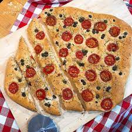

Focaccia

Ingredients
- 3 cups (500g) 00 type flour or all purpose flour
- 1 1/4 cup (300g) water, lukewarm (90 degrees fahrenheit)
- 1 1/4 teaspoon (4g) kosher salt
- 1 tablespoon (11g) instant yeast
- Extra virgin olive oil (to taste)
- Toppings:
- Half a cup of Cherry tomatoes
- Pitted lives
- 3 sprigs rosemary leaves
Instructions
- Mix in a bowl 3 cups (500g) 00 type flour or all purpose flour, 1 1/4 teaspoon (4g) kosher salt and 1 tablespoon (11g) instant yeast
- Gradually add 1 1/4 cup (300g) of lukewarm water to the mixture
- Knead the flour until it becomes smooth
- Lightly oil a bowl with extra virgin olive oil
- Form the dought into a ball by tucking it under itself and rubbing the bottom on the counter
- Drop the dought into the bowl, roll it around and cover it with plastic wrap
- Let it sit for an hour in a warm area
- add the cheese and egg mixture to the pan while continue tossing the spaghetti
- Add half cup of pasta water while, continue to toss the pasta until the cheese and egg mixture becomes an smooth and creamy sauce
- In a baking sheet, oil the bottom with extra virgin olive oil and season it to taste with salt
- Invert the bowl over the baking sheet and spread the dought using your finger tips over the entire sheet
- Cover the baking sheet with plastic wrap and let it sit for 30 minutes
- Slice in half the cherry tomatoes
- pre-heat the oven to 450 degrees fahrenheit (230 celsius)
- Drizzle extra virgin olive oil over the dought
- Press the sliced cherry tomatoes and the olives randomly across the dought
- Sprinkle the leaves of 3 sprigs rosemary over the dought
- Season to taste the surface of the dought with salt
- Put the sheet in the pre-heated oven for 20 to 25 minutes
- Take the sheet out of the oven, cut the focaccia, serve and enjoy
home